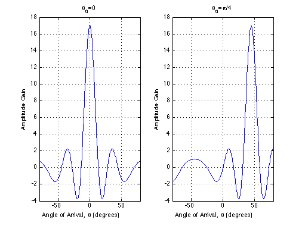

Antenna gain for constant weighting with N=16 and d=\lambda/4
Copyright 2007 Telecommunications Lab
Contents
N=16;lambda=2*10^-6; %value of lambda doesn't matter in this case, it will be canceled d=lambda/4; theta0=0; theta0_=pi/4; theta=[-pi/2:.01:pi/2]; theta=theta+eps; %Otherwise, the denominator would be zero at t=0 theta_deg=theta.*(180/pi); % \theta_0=0 G=(sin(pi*(N+1)*(d/lambda).*sin(theta-theta0)))./(sin(pi*(d/lambda).*sin(theta-theta0))); % \theta_0=\pi/4 G_=(sin(pi*(N+1)*(d/lambda).*sin(theta-theta0_)))./(sin(pi*(d/lambda).*sin(theta-theta0_)));
ploting
Gain (\theta_0=0)
%figure(1);set(1,'Name','Antenna gain for constant weighting with N=16 and d=\lambda/4'); subplot(1,1,1);title('Antenna gain for constant weighting with N=16 and d=\lambda/4'); subplot(1,2,1);plot(theta_deg,G,'LineWidth',1.5);axis([-80 80 -4 18]); grid on;title('\theta_0=0'); xlabel('Angle of Arrival, \theta (degrees)');ylabel('Amplitude Gain') % Gain (\theta_0=\pi/4) subplot(1,2,2);plot(theta_deg,G_,'LineWidth',1.5);axis([-80 80 -4 18]) grid on;title('\theta_0=\pi/4'); xlabel('Angle of Arrival, \theta (degrees)');ylabel('Amplitude Gain')